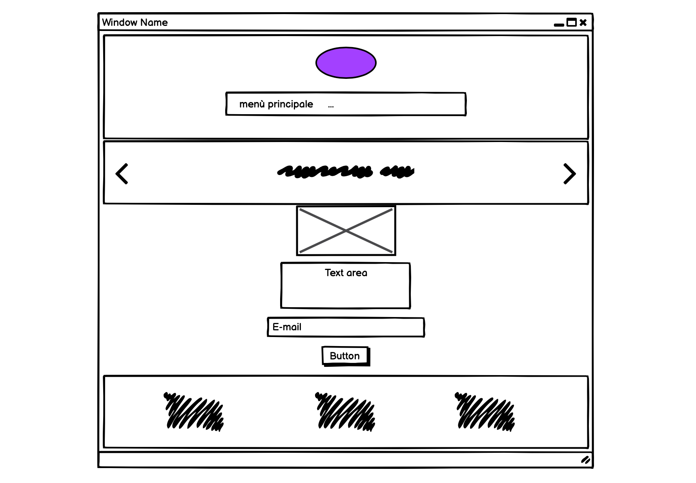

Chi siamo?
Ci chiamiamo Giada e Agnese e siamo due studentesse dell'università di Bologna. Sperando che il sito possa esservi utile ci teniamo ad informarvi che ogni contenuto presente nella pagina è frutto di un'attenta e dettagliata ricerca.
Documentazione
Abstract
Questo sito nasce con l’idea di raccogliere e suddividere per generi gli eventi musicali nella città di Bologna così da facilitare l’attività di ricerca degli appassionati. L’obiettivo del sito, seppur principalmente informativo, non si limita a questo: mira infatti anche a promuovere la creatività attraverso l’istituzione di un concorso per gli under 30 che vogliono far conoscere la propria musica. È d’obbligo poi aggiungere un terzo proposito che è stato l’anima dell’intero progetto e che consiste nel dare sostegno ad un settore gravemente colpito durante gli ultimi anni di pandemia attraverso la promozione delle attività ricreative dal vivo.
Project Management Plan
1.Benchmarking
1.Obiettivi: Il primo obiettivo, attraverso la realizzazione di questo sito, è quello di rendere più facile, veloce e intuitiva la ricerca degli eventi musicali che si svolgono a Bologna. Il secondo obiettivo è invece quello di stimolare la creatività musicale dei giovani attraverso la partecipazione ad un concorso. 2.Target utente: Il nostro sito è rivolto agli appassionati di musica rock, classica, jazz, elettronica e a tutti gli under 30 motivati a portare la loro musica sul palco. 3.Competitors: Analizzeremo i competitor seguendo 3 criteri per noi fondamentali nella costruzione del nostro sito: -varietà di eventi musicali -capacità di guidare l’utente in base ai propri interessi -fornire informazioni sugli eventi. La valutazione è da 1 (per niente) a 5 (del tutto).
eventbrite.it
-varietà di eventi 5 -capacità di guidare l’utente in base ai propri interessi 2 -fornire informazioni sugli eventi 5 Cosa migliorare: è un sito confusionario e quindi non è capace di guidare l’utente secondo i propri interessi: non mette in ordine cronologico gli eventi e non rispetta interamente i filtri selezionati. Esempio: nella ricerca di eventi di giugno a Bologna inserisce anche eventi di altre città. Cosa ci piace: presenta un’ampia gamma di eventi ed è molto chiaro nel descriverli.
zero.eu
-varietà di eventi musicali 5 -capacità di guidare l’utente in base ai propri interessi 4 -fornire informazioni sugli eventi 5 Cosa migliorare: Se selezioniamo una specifica data il sito anziché dichiarare che non ci sono eventi per quella data ci rimanda ad altre date vicine non rispettando la ricerca dell’utente. Cosa ci piace: è un sito a cui ci siamo ispirate perché suddivide una buona varietà di eventi musicali per genere. Presenta inoltre una buona e dettagliata descrizione di ciascun evento.
cittadellamusica.comune.bologna.it
-varietà di eventi musicali 5 -capacità di guidare l’utente in base ai propri interessi 3 -fornire informazioni sugli eventi 4 Cosa migliorare: La descrizione degli eventi non è sempre chiara. Nel sito manca la suddivisione in generi musicali e questo non permette all’utente di fare una ricerca mirata in base ai propri interessi. Cosa ci piace: buona è la scansione temporale e la varietà di eventi presenti.
2.Struttura e layout
Architettura del sito.
Wireframe.
Menù
Pagina degli eventi
Pagina del concorso
Look and Feel.
1.La font: Per il logo abbiamo usato la font “Love Ya Like A Sister” nel peso Regular 400. Per i titoli abbiamo utilizzato la font sans-serif “Ubuntu” nel peso Bold 700. Per i contenuti discorsivi abbiamo usato la font serif “Vollkorn” nel peso medium 500. Vollkorn è una font che ricorda tempi passati e lontani mentre Ubuntu è più moderna. La scelta di abbinarle è nata dal desiderio di intrecciare due epoche lontane fra loro, ma che accostate tirano fuori il meglio l’una dall’altra. Il risultato finale è uno stile grafico in grado di evocare quelle emozioni che a differenza delle epoche non cambiano mai. Proprio come la musica che scalda i cuori di oggi come quelli di un tempo. 2.Palette colori: Abbiamo deciso di abbinare il bianco e il nero per conferire chiarezza ed eleganza alla pagina. Con l’aggiunta del #a25cff (viola) per non rinunciare ad un tocco di vivacità. 3.Elementi della pagina: Per facilitare la lettura dei contenuti abbiamo deciso che ogni riga di testo non dovesse superare una certa lunghezza. Abbiamo inoltre creato dei riferimenti grafici per facilitare l’orientamento nella pagina proprio per questo abbiamo scelto di colorare di nero le date degli eventi così da differenziarle dal paragrafo in bianco e abbiamo aggiunto anche linee di separazione fra un paragrafo e l’altro.
3.Linguaggi e strumenti
Html Css Javascript Bootstrap 4.3 Flickr Font Awesome Github Balsamiq Google font
Communication Strategy
1.Background
Molti sono i siti che offrono informazioni riguardo gli eventi musicali a Bologna. Questi, però, non sempre sono organizzati in maniera chiara ed intuitiva: alcuni, mancando la suddivisione degli eventi musicali per genere, si riducono ad un grande calderone indistinto che scoraggia nella scelta ed incentiva lo zapping. Altri non presentano una lineare suddivisione temporale degli eventi, ma l’ordine è fondamentale: questo permette di concentrarsi solo sulle informazioni fornite, senza farsi distrarre da altre preoccupazioni. Quello che quindi abbiamo tentato di fare noi è stato creare un sito che fosse il più organizzato possibile, così da permettere all’utente di godere solo della musica. Abbiamo poi pensato che fosse bello dare spazio a giovani talentuosi e appassionati: perché assistere solo alla musica di altri artisti e non provare a portare la propria?
2.Obiettivi comunicativi
-fornire informazioni riguardo eventi musicali a bologna -Promuovere la creatività di giovani talenti
3.Target audience e messaggio
Target utente principale: •Residenti a bologna appassionati di musica rock, classica, elettronica e jazz. •Band e musicisti under 30 Target utente secondario: •Turisti della città •Giovani in cerca di divertimento Il target utente a cui ci riferiamo viene solitamente raggiunto attraverso il sito web del comune di Bologna (dispersivo), totem e sfuggenti cartelloni sparsi per la città che non approfondiscono sufficientemente l’evento. Il target utente principale può essere raggiunto più velocemente attraverso un sito web schematico e ben organizzato, che promuove il proprio utilizzo attraverso una mirata diffusione pubblicitaria sui social network.
Quale messaggio vuole trasmettere il sito?
Vorremmo attraverso il nostro sito semplificare le informazione riguardo gli eventi musicali presenti in città, così da incentivare e promuovere la ripresa delle attività ricreative dal vivo e dare sostegno ad un settore gravemente colpino durante gli ultimi anni di pandemia.
4.Promozione
Intendiamo promuovere il sito: -attraverso la diffusione sui social network5.Valutazione dei risultati
Abbiamo deciso di promuovere il nostro sito su Facebook siccome di amanti della musica rock, jazz, elettronica e classica ce ne sono di tutte le età e Facebook ci sembrava la piattaforma più adatta a questo compito, specialmente perchè ancora oggi è il social più usato. Visti gli esiti ottenuti dalla pubblicazione del post possiamo dire di aver raggiunto un buon risultato per quanto riguarda la diffusione e la promozione del nostro sito. Oltre a più di 50 like il dato più significativo è l'interazione che gli utenti hanno dimostrato nella zona commenti: abbiamo avuto un feedback molto positivo. In particolare le opinioni più considerevoli che abbiamo raccolto riguardano: -l'usabilità del sito in termini pratici -la curiosità nei confronti del concorso musicale Inoltre ci sono state anche 7 ricondivisioni del nostro post, questo dimostra che gli utenti non solo hanno trovato interessante il sito, ma a loro volta hanno voluto consigliarlo ai propri amici e conoscenti.